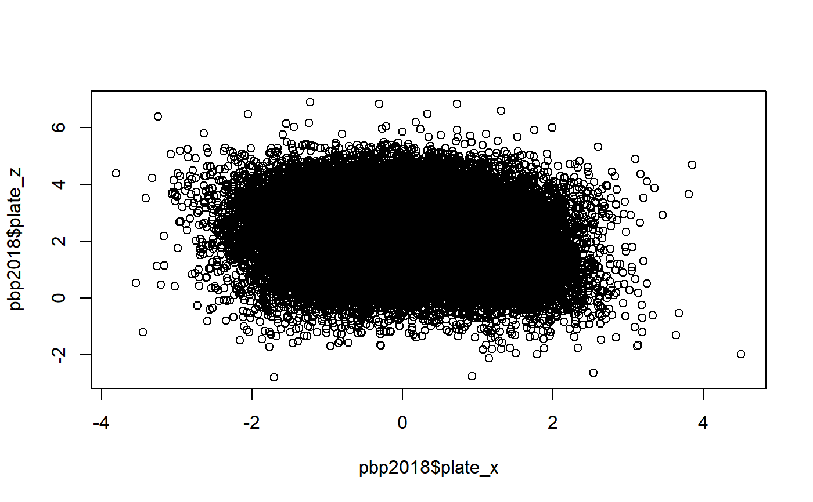

pbp2018.RdPitch by pitch data for select pitchers in the 2018 MLB season.
pbp2018
A data frame with 84007 rows and 33 variables.
The variables are as follows:
pitcher name
game date
type of pitch (abbreviation)
type of pitch (full)
pitch velocity at release point
result of play
result of pitch
batter handedness
pitcher handedness
batted ball type
number of balls
number of strikes
horizontal location of pitch in strike zone from the umpire's perspective (zero is the middle of the strike zone)
vertical location of pitch in strike zone from the umpire's perspective (zero is ground level at the point the pitch crosses the plate)
TRUE if a runner is on third base
TRUE if a runner is on second base
TRUE if a runner is on first base
number of outs
inning number
top or bottom of the inning
exit velocity off the bat
launch angle off the bat
"perceived velocity": pitch velocity adjusted for extension of the pitcher at the release point
spin rate (in revolutions per minute) of the pitch
horizontal distance from pitcher's mound to release point of the pitch
expected batting average based on exit velocity and launch angle
expected weighted on-base average based on exit velocity and launch angle
nth batter of the game to face the current pitcher
nth pitch in the current at bat
current score for offensive team
current score for defensive team
type of infield shift
type of outfield shift
The data was obtained from Baseball Savant via a search, and subsequently subsetted.
summary(pbp2018$release_speed[pbp2018$player_name=="Jacob deGrom" & pbp2018$pitch_type=="FF"])#> Min. 1st Qu. Median Mean 3rd Qu. Max. #> 91.50 95.20 96.20 96.04 97.00 99.70plot(pbp2018$plate_x, pbp2018$plate_z)table(pbp2018$player_name, pbp2018$pitch_type)#> #> CH CU EP FC FF FS FT KC null PO SI SL #> Aaron Nola 633 992 0 0 1165 0 422 0 0 0 0 0 #> Blake Snell 559 588 0 0 1500 0 0 0 5 0 0 266 #> Carlos Carrasco 485 236 0 0 922 0 390 0 99 1 0 914 #> Chris Sale 480 0 0 0 1096 0 271 0 1 0 0 975 #> Clayton Kershaw 11 466 0 0 1169 0 0 0 4 0 0 1157 #> Cole Hamels 580 402 0 563 934 0 455 0 5 0 0 150 #> Corey Kluber 205 708 0 932 280 0 0 0 104 1 1038 0 #> Dallas Keuchel 438 0 0 525 413 0 1453 0 1 0 0 642 #> David Price 712 0 0 817 502 0 1011 79 0 0 0 0 #> German Marquez 201 739 0 0 1466 0 288 0 4 0 0 494 #> Gerrit Cole 159 0 0 2 1737 0 201 664 0 0 0 682 #> J.A. Happ 379 51 0 0 1839 0 433 0 2 0 0 391 #> Jacob deGrom 516 255 0 0 1374 0 295 0 2 0 0 770 #> Jake Arrieta 295 284 0 0 53 0 0 0 1 0 1475 652 #> James Paxton 11 0 0 375 1653 0 0 560 4 0 0 0 #> Jon Lester 290 501 0 796 1449 0 0 0 12 0 159 0 #> Jose Berrios 271 908 0 0 1026 0 777 0 85 1 0 0 #> Justin Verlander 53 545 0 20 2277 0 0 0 4 0 0 817 #> Luis Severino 459 0 0 0 1663 0 0 0 2 0 0 1185 #> Madison Bumgarner 157 466 0 720 0 0 703 0 7 0 0 0 #> Masahiro Tanaka 0 98 0 100 553 771 0 0 2 0 132 820 #> Max Scherzer 547 277 0 342 1746 0 0 0 13 0 0 568 #> Nathan Eovaldi 0 110 0 677 845 257 0 0 8 0 0 232 #> Noah Syndergaard 381 236 0 0 499 0 0 0 0 1 792 503 #> Rick Porcello 377 470 0 0 718 0 954 0 0 0 0 804 #> Shohei Ohtani 0 56 0 0 396 191 0 0 0 0 0 210 #> Stephen Strasburg 428 421 0 0 980 0 141 0 3 0 0 188 #> Walker Buehler 91 0 0 231 998 0 429 344 93 0 0 345 #> Zack Greinke 661 350 79 0 1388 0 175 0 4 0 0 555